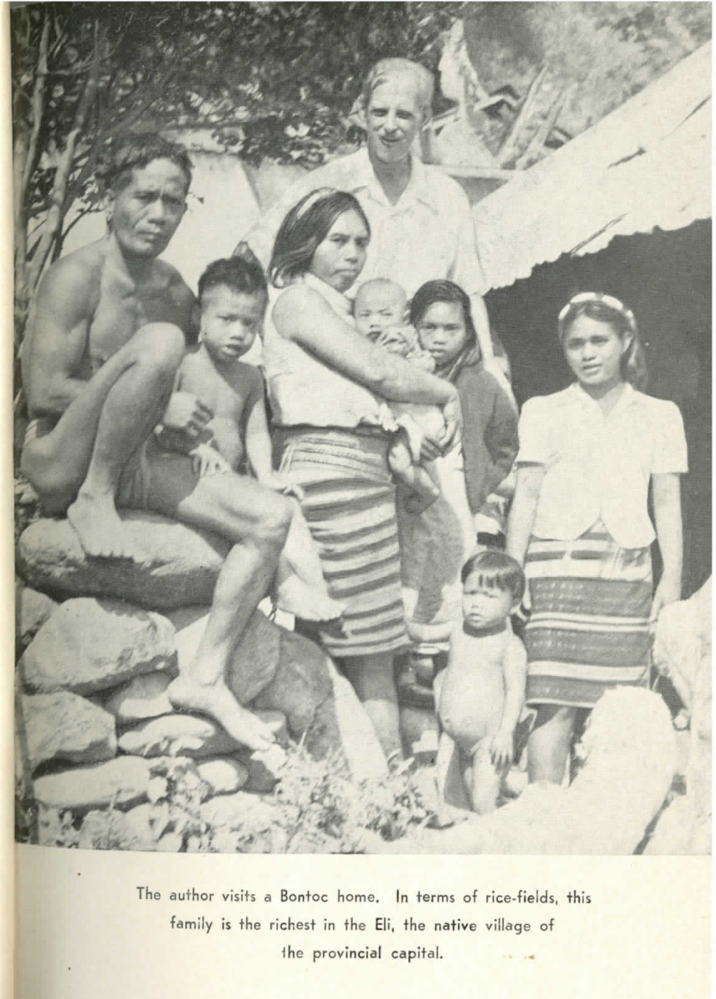
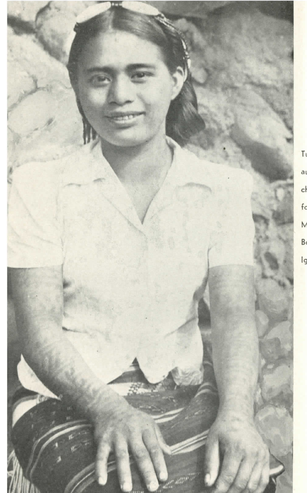

TUVYAN · FAMILY HISTORY · MUSIC EDUCATION
Anatalia Magkachi Saboy | Biography & Family History
A life in education, music and public service, rooted in Bontok, Mountain Province, and the changing history of the Magkachi family.
Biographical information supplied by her family; historical photographs and their original captions from Tate U. H. Ellinger, Friend of the Brave.
Anatalia was from Bontok, Mountain Province in northern Philippines, and was the eldest among the Magkachi siblings.
Education and professional life
Anatalia Magkachi Saboy studied for four years at what was then known as the University of the Philippines Conservatory of Music, now the UP College of Music. She completed her bachelor's degree at Saint Louis University, her master's degree at the University of the Cordilleras, and her Doctor of Education degree at Baguio Central University.
Her career spanned several forms of public service. She began as an administrative clerk in a local government unit, later became a basic education teacher, and eventually served as Regional Music Supervisor for the Cordillera Administrative Region (CAR) in the what was then called the Department of Education, Culture and Sports (DECS), now the Department of Education (DepEd). In this newly reconstructed website, her surviving writings and musical materials form part of the TUVYAN family archive.
The Magkachi family in an early photographic account
In Friend of the Brave, Tate U. H. Ellinger photographed a family in a Bontoc home. The original printed caption is retained alongside the family photograph for historical reference.


The images are presented as archival reproductions, without AI reconstruction. Consult the supplied scanned book (PDF, approximately 9 MB).
Kachangyan, pusi and changing social standing
The Magkachis belonged to the Kachangyan (also Kadangyan)—a historically wealthy or high-status stratum of the community. In this traditional hierarchy, pusi referred to those who were poor and occupied a lower social position. The distinction belonged to an earlier social order and should not be used to describe the standing or worth of present-day families.
Over generations, economic and educational opportunities altered these relationships. Many descendants of historically poorer families became prosperous as educators, businesspeople and other professionals, while families associated with the former Kachangyan stratum generally fell on hard times with some of them eventually rebuilding part of their earlier wealth.
Reference
Ellinger, Tate U. H.1962. Friend of the Brave. Manila: Manlapaz Publishing Company. See especially printed pp. 16–18.